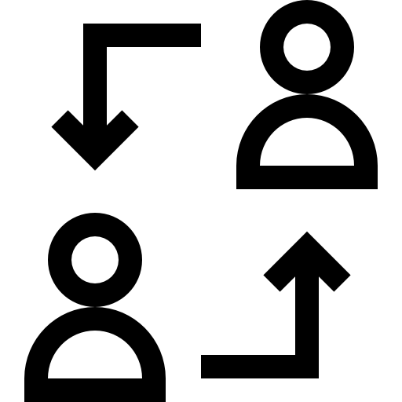

Follow a specified worker

Monitor the system remotely
Optimized paths and ability to detect collisions

Pallet Pro is a team of passionate engineers, designers, and industry experts united by a common goal – to transform the way warehouses operate. With a relentless commitment to innovation and precision, we strive to deliver excellence in every product we create.
At Pallet Pro, we invite you to join us on the exciting journey of warehouse automation. Whether you are a small-scale operation or a large distribution center, our automated pallet jacks are designed to elevate your efficiency and redefine your success.